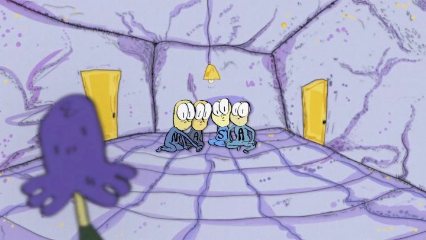

I can rely on the Ottawa International Animation Festival for showing weird and wonderful feature-length films that I'd normally never hear about. Sometimes it leads to fun surprises, sometimes not, and as subjective as art has become, both get celebrated with equal fanfare. "Barber Westchester" comes across as one of the weaker and stranger ones to my memory, a movie that could be summarized as "think of one of those low effort, made-in-an-hour, 30-second-long, animation-meme videos on YouTube, and expand it to 80 minutes." My sense is that the movie would mean a lot more if you were already a fan of the accomplished indie director and army-of-one animator, Jonni Phillips. The artist has a successful YouTube channel and Patreon of followers sustaining the work. Many of those followers were in attendance at the live festival screening, gushing and applauding enthusiastically by the end of the movie, much to my confusion. Had we watched the same film? Was there something I missed? The title character of the movie is Barber, a boy (or girl? Gender and sexuality seems fluid and nonjudgemental throughout) with a purple octopus covering his head (I think it's supposed ot be his hair?). He's a quiet kid (or adult?) with a job working on his local town's telescope under the Mayor. He notices some strange things happening in town, namely that neighbors and friends seem to be turning into melting brown clay moulds of themselves. The Mayor is behind it, and to get Barber out of the way, he pulls some strings to have a friend at NASA hire him. So Barber is whisked away from his overtly-religious parents and begins life in a new town, where nothing is what he though it would be. In terms of story, there basically isn't one. The idea of the Mayor being the villain, complete with a co-conspiritor at NASA, is fun (he even gets a Disney-esque villain song, funny but out of place for being the only song in the movie), but that's dropped without any explanation for why or how. Nothing really happens to Barber throughout the movie, perhaps even to his disappointment. Story isn't the point. "Westchester" is really about the feeling of moving out for the first time and becoming an adult, and the anxieties and loneliness that come with finding your place in it, while figuring out your identity along the way. Also, about being gay. That's an extra footnote towards the end of the movie, and doesn't matter much, but might matter a little because some people might judge you, but might also be cool with it. A useful comparison to "Barber Westchester" might be to a couple other one-person-team movies: Anne Marie Fleming's 2016 movie "Window Horses" and Clyde Petersen's 2016 "Torrey Pines." Like "Window Horses," "Westchester" has a bunch of guest animators, mainly YouTube artists (including some prominent ones that I'm a genuine fan of), and their work is usually framed here in stories of advice different characters give the lead. Those external shots are as little as five-seconds long though, and 95% of the movie is still the director's personal style, which looks like something a child scribbed quickly on your wall in permanent marker. The story, pacing, and themes are more similar to "Pines," where the creator seemed to decide a starting point of "I'm gay, I'm different, and I don't know" was enough to demand more than an hour of your attention, and gave up on filling in the rest. Instead of doing what a disciplined arists might have done, and recognize the messaging could have been reduced to an efficient five-minute short with nothing of value lost.  "Westchester" finds some moments of humour in its weirdness, but that too feels lazy and meant to appeal exclusively to Gen Z tastes. Most characters start their conversations with "BAR-BER... HIIIIIIIIIIIII-EEEEEE...", or if they're a good character, they whisper "(hey barber)" in a much less scary tone. Barber, the only sensible voice of reason in the movie, will say "what the f***?" several times as the runtime progresses. Some of the strange things that occur include a mole-man that pops up in unusual places, or Barber losing an arm and no one making a big deal of it, because hash-tag-life-be-like-that-sometimes. It's impressive when one person animates even a one-minute film, let alone a one-hour film, but it's less impressive when it LOOKS like one person made it by themself. Characters look deliberately weird and ugly, sometimes to the point where it's hard to make out what they're supposed to be. Backgrounds are hastily drawn. There are a lot of distant shots, where characters are reduced to a bouncing ball of color (in Barber's case, he's a purple grape when he's more than 20 feet from the camera). Animation cycles are used for too long, and re-cycled often. There's clearly less concern about the animation process here, and more on just conveying the idea or dialogue with as little effort as possible. The audio quality is even more attrocious. Voice acting is passable enough (though it sounds like leftover actors from the local drama club), but everything sounds like it was recorded on a cheap built-in laptop microphone, with wild inconsistencies in mixing and volume. There's a couple background tracks from a better-quality digital MP3 that sound a bit better, the songs being about how stupid life is. It'd be one thing to hear this on laptop headphones, but it's extemely noticable in a theater screening.I'm being remarkably harsh on "Barber Westchester," and to be clear, most of the people in my theater screening seemed to love the movie and the creator. I strongly encourage you to check out some of Jonni Phillips' shorts online, and if that style appeals to you, to then check out this feature. But coming in blind, I wasn't impressed. As software quality gets better and cheaper, and as creative output on social media seems to get lazier, more and more artists seem empowered to create not just short films, but feature-length movies. That's a massive feat and an impressive accomplishment. But for something that takes up so much of a viewer's time, artist's should be asking less about whether they "can," and more about whether they "should."
- "Ani" More reviews can be found at : https://2danicritic.github.io/ Previous review: review_Barakamon Next review: review_Barefoot_Gen